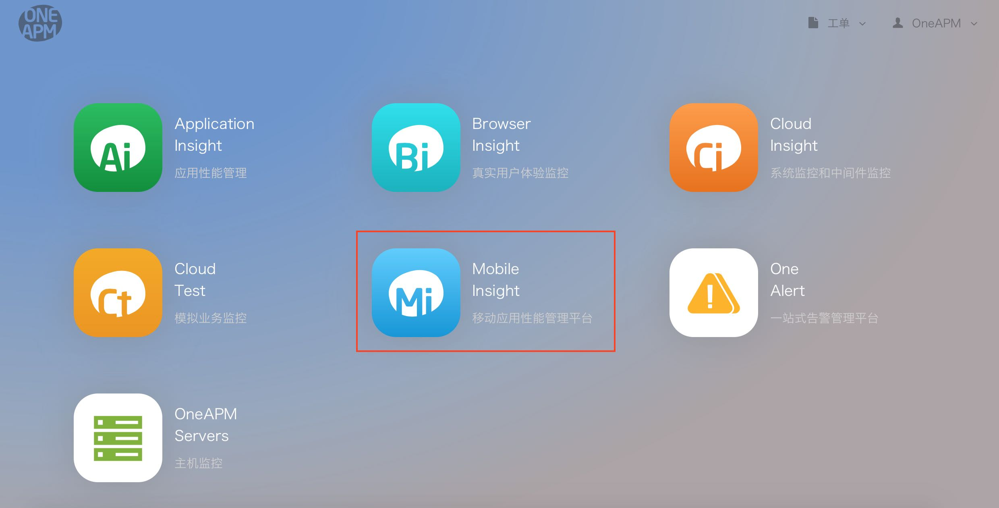
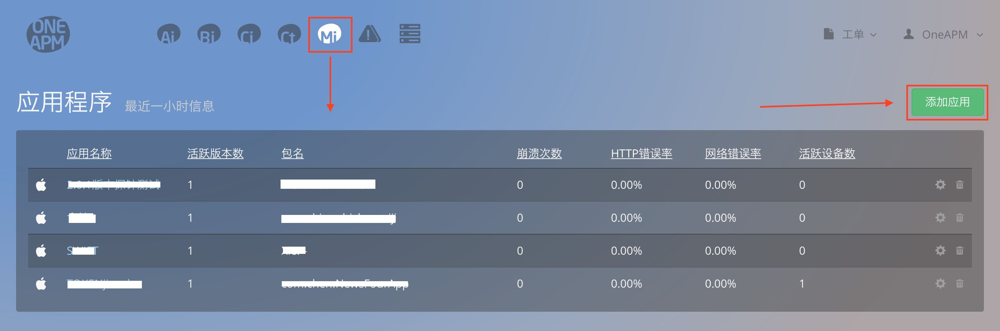

新手入门
产品介绍
OneAPM 公司的 Mobile Insight 产品是专注于帮助开发者解决应用上线后性能问题的监控与管理。通过应用内嵌入 Mobile Insight 产品的 SDK , 同步真实用户访问体验,及时发现使用过程中的卡顿、崩溃、连接超时、内存泄漏等问题,帮助开发者第一时间终结用户流失。通过实时、多维立体的性能数据展现与自动分析,更能防患于未然,降低 App 上线后维护与迭代成本,直接提升用户留存率。
Mobile Insight 共支持两种平台: iOS、Android
版本分类
Mobile Insight分为SaaS免费版、SaaS付费版、企业级。
使用流程
1.注册
首先您需要有一个OneAPM的账号: 点击注册
2.选择平台
登陆账号之后选择Mi(Mobile Insight)移动应用性能管理平台，进入应用列表管理界面。
 3.添加应用
在应用列表页面，点击< 添加应用 >按钮，进入下载安装页面。

4.安装集成
点击相应图标，选择您想要集成的Android/iOS SDK，根据步骤将SDK集成到您的项目中。

注意：详尽安装集成步骤，请选择本帮助文档－使用平台查看。
5.查看数据
成功集成之后，运行项目产生数据即可在OneAPM平台上查看应用的各项性能数据。
注意：
* 给应用取名后获取的Token不能被应用到包名不同的应用程序中
* iOS崩溃数据必须在Release模式下真机测试并断开与Xcode的连接才能正常搜集到。
* 安卓WebView数据需要配置之后才能正常使用。
* 安卓集成中不同的编译器需要选择不同的插件。